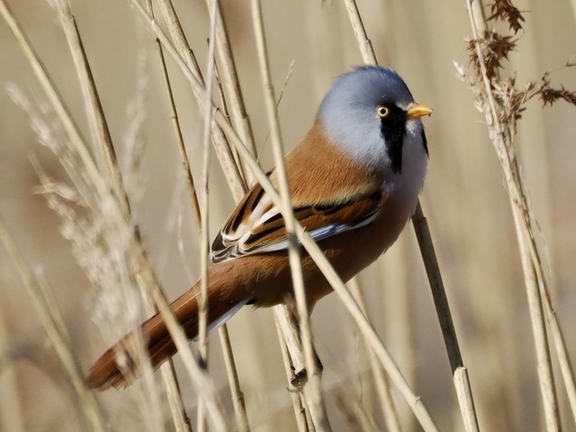
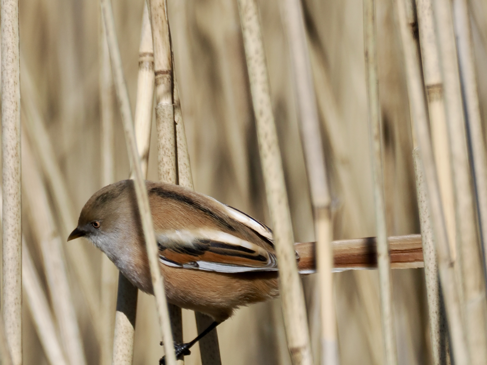

Bearded Reedling
Panurus biarmicus
Other names: Bearded Tit
Order: Passeriformes
Family: Panuridae

One of my favourite birds. Long-tailed, very rotund and cute. Prefers dense reedbeds year-round, especially with Phragmites. Eats insects in summer and reed seeds in winter. Their gastrointestinal tracts change in structure and they eat grit to cope with diet changes in winter. Is not a real tit (Paridae); previously thought to be related to parrotbills, but have later been placed into its own family. Male has an orange-brown body and grey head, and triangular black "beard" (more like a moustache, honestly).

Female is overall orange-brown and lacks the beard.